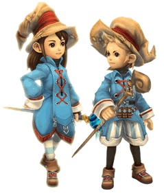

20 |
ジョブ |
 |
冒険者は様々なジョブがあり、それぞれ異なる特性を持っています。「冒険者見習い」は、王様から冒険者に任命されると、戦士のジョブに就くことになります。 ゲームが進むと、戦士だけでは探索が困難なダンジョンに行くこともあります。そのようなときは、冒険者を新たなジョブに「ジョブチェンジ」させるといいでしょう。 ジョブチェンジするためには、そのジョブに必要な極意を教える建物が必要となります。街にその建物を建てた上で、ジョブ募集のおふれを出すことでジョブチェンジ可能となるのです。 ジョブと、ジョブチェンジに必要な建物は以下の４種類です。 |
●戦士  攻撃力の高い武器を使いこなし、前線に立って敵をなぎはらう戦闘のスペシャリスト。 攻撃力の高い武器を使いこなし、前線に立って敵をなぎはらう戦闘のスペシャリスト。戦士にジョブチェンジするには、街に訓練場を建てる必要があります。 |
●白魔道士  傷ついた仲間を癒し、戦いに希望を与える隠れた功労者。
傷ついた仲間を癒し、戦いに希望を与える隠れた功労者。白魔道士にジョブチェンジするには、街に白魔法学院がなければなりません。 |
●黒魔道士  多彩な攻撃魔法で魔物を殲滅する攻撃の切り札。 黒魔道士にジョブチェンジするには、街に黒魔法学校を建てる必要があります。 |
●シーフ  ダンジョンの探索や近道、宝箱の鍵開けのプロ。
ダンジョンの探索や近道、宝箱の鍵開けのプロ。シーフにジョブチェンジするには、遊技場の建設が必要です。 |
ジョブ募集のおふれで立て札に集まった冒険者に話しかけると、ジョブチェンジしてもいいかどうかを王様に尋ねてきます。 ジョブチェンジをすると、それまで覚えていたアビリティは忘れてしまうので、能力を見てジョブチェンジさせるかどうかを決めるといいでしょう。 |
 |
 |
 |